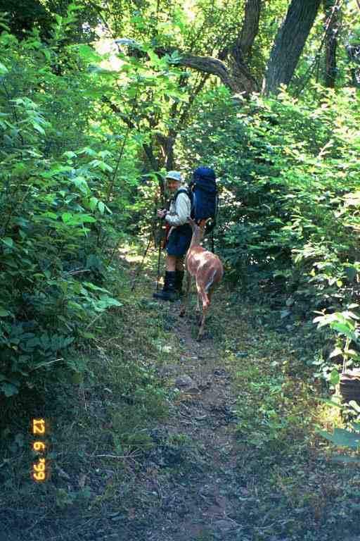
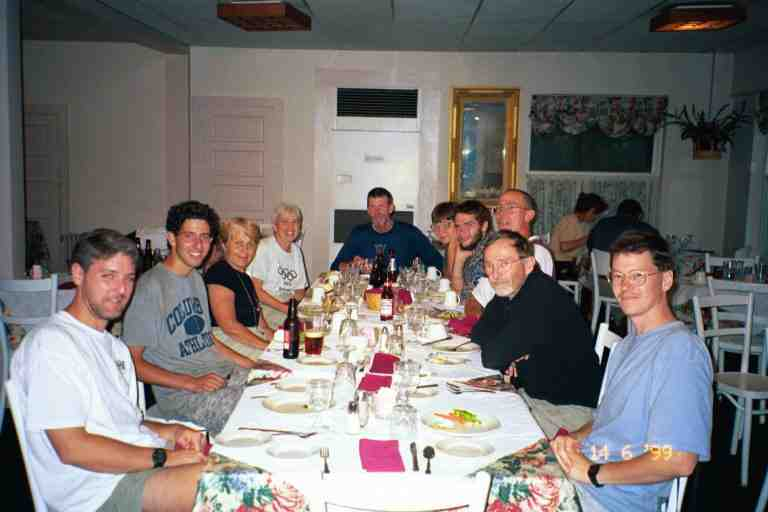

We left the Denton shelter on June 11 with a little over 50 miles to go to Harper's Ferry where we would be getting off the trail for three days in the Washington area. We walked a mile to VA638 with MOM and SMOKEY JOE and then all four of us walked down the highway for a mile to Linden VA, where the two of them were expecting maildrops.
Linden consists mostly of a few buildings including the Post Office and a convenience store situated across the street from each other on VA55 on the corner of VA638. The Post Office was not yet open, so we left our packs leaning against the front of the building and went across the street to the store to get a few supplies to get us to Harper's Ferry. We managed to get most things we needed despite the small selection, with the exception of fried pies. We had to settle for some cheap Danish's as substitutes. We also bought some crackers which we stored in a used Gatorade container.
MOM and SMOKEY JOE obtained their packages and opened and sorted them outside in front of the Post Office, while we did the same with our purchases. SMOKEY JOE's package included a dozen home made bran muffins from his mother. He did not want to carry all of them so we helped him eat them. I had three of them. I wondered what the locals arriving at the Post Office thought of these four dirty middle aged people with backpacks sitting on the ground eating and sorting through packages of food.
If we had checked our Thru hiker Companion we would have seen that there was a hiker friendly restaurant and a bakery 1.4 miles down the road which would have been great because one problem here was that there was no washroom facilities, so we could not dawdle too long. While we were here, SUNSHINE EAST arrived, having hitched into town. He crossed the road and was quickly able to get another ride into Front Royal where he was to pick up a rental car to get him home. We would not see him again.
We packed our bags and walked one mile along VA55 to get us back to the trail. We met SEMPER FI DREW who was walking into town. We came to the trail at a point where it crossed the highway and proceeded down a road in order to go under the four lane US66. MA proceeded down the road, while I made a much needed pit stop in the woods. I then walked down the road and found MA at the entrance to the woods talking to JILEBI and RHUBARB who we had not seen since Kincora hostel at the end of April. They had spent the last few days with friends and relatives nearby. I looked back down the road and saw SMOKEY JOE at the highway talking to someone in a van. It turns out, it was the Postmistress who found a letter addressed to him and drove down the highway to give it to him. She addressed him as Mr Ward, and it took him a second to realize she was talking to him, since we are not used to using our real names.
We stopped early for the day at Dick's Dome shelter, for a total trail distance of about 10 miles. The shelter is situated across a little footbridge at the edge of a noisy shallow rocky stream, 0.2 miles from the trail at the bottom of a little hollow. When we arrived, there was a group of six men and young boys from Georgia, on an annual section hike, who were having a meal break. After a little conversation, they left us with some of their extra food as they would be only spending two more days on the trail. That night we ended up being five for the night, as we were joined by SMOKEY JOE and MOM, as well as POTS who decided to stop here after his day at a motel in Front Royal. We started a fire and cooked hot-dogs and buns that MOM had bought in Linden. She also supplied cheezies and I then toasted some Pop Tarts.
During the afternoon MA also prepared humus from the rest of the powder we had received from FUNK THAT in Troutville and we dipped crackers in it for a snack. Late in the afternoon a man and woman appeared and looked over the area and then went back into the woods. He returned later with an 18 pack of Miller Draft beer which he left with us. He said he was the caretaker for this area and came to check things out via an old access road. His wife was not the outdoor type but once in a while he convinced her to spend the night. They were tenting a short distance from us. We thanked him profusely for the beer and placed it in the stream to cool.
All in all it was a wonderful time at this spot. This cool shady place next to a noisy cold stream was a great oasis during the hot weather. We had stopped early which left us much time to talk and relax, and the beer and hot dogs added to our enjoyment. MA and MOM sat on the edge of the shelter for some girl talk and a chance to talk about their lives and go over their physical complaints. I went into the shelter to read and sat on my glasses, bending the frame and pulling out one of the screws. It was not a big problem except that I would no longer be able to read at night before falling asleep. I had read a few books that I had picked up at shelters and hostels (including one that CHICKPEE had passed on to me), and then left them at shelters when finished
The other three decided to tent and left the shelter to MA and I, making some comment about our need for privacy. We did not say anything, but a small old dirty shelter with no door was not our idea of a private spot for intimacy. It was more likely that they were tenting because of the shelter. As per its name, it is a dome shaped building. It is small six sided structure built about 4 feet above the ground against the side of a steep hill with boulders to climb on for access through the doorway which faced the stream. Its shape would likely make it difficult to get many people inside, since they would not be able to be side by side. However, the caretaker said that he had seen 8 in it during a storm. I spent some time sweeping the floor with the broom, and declared war on the mosquitoes that were hanging around the recesses where the floor met the walls. Late in the day we left a note in the register telling people about the number of beer that were left in the stream. As I recall, we amended the number a few times.
The next day was very eventful and things started almost immediately upon getting on the trail. We climbed for about a mile through a lush heavily wooded area until we came to an opening at the top of the hill. After a short walk on the mostly grassy summit, we turned and saw a small male deer about 20 feet behind us. The trail proceeded down the hill along a narrow tree lined corridor and as we went down we noticed that the deer was following us. It would come close to us and stop and eat, then hurry to catch up to us again. I thought it wanted to go by us as there was no way to get off the path and get into the woods, so I stopped to let it go by. It came up to me and I put out my hand and touched it and then rubbed its neck. It then went past me but would not go by MA, so we walked down the trail in single file, MA in front, the deer second and I in the back.
We heard MOM behind, so we stopped and the deer went back to greet her. Eventually, we managed to let it get in front of us where it would run ahead and eat and wait for us and then run on ahead again. When we arrived at the Sky Meadows State Park side trail, we went our separate ways. I am reluctant to mention that hunting is permitted in the state park but I am unaware of the season. Our friend would not likely stand much of a chance, unfortunately. I suspect a hunter could simply drop down his tail gate and invite him to jump in. I have attached a great picture of MA and our friend.

MA had a severe problem that morning and had to make many quick stops. She took Imodium and drank a lot of water to avoid dehydration. It was likely caused by the bran muffins and by the humus which is a bean product. It was slow progress all morning because of the many stops and MA's reduced energy level.
Just before noon, we came upon a noisy group of boy scouts sitting, taking a break. I mention they are noisy because we could hear them long before we passed them. One of them made a remark about it being a nice day and I replied something to the effect that it would be nicer if it was quiet. Not very nice of me, for sure. After being on the trail for three months, the quiet woods had become our natural environment and the noise of civilization seemed inappropriate. But of course, there was no need to pick on these noisy kids.
The scouts must followed us just after we went by, because we heard them for the next mile as we approached Rod Hollow shelter. We sat on the edge of the high shelter talking to a section hiker when the scouts arrived, traipsing here and there around the shelter trying to locate the loop trail that would lead them back to the AT.
We removed our boots to relieve our feet, as we had decided to take a long lunch break to cook a meal and to allow MA to rest. A light rain began, so we went across the clearing to the covered picnic table and cooked some pasta. We were joined by our three friends. We took our time at the shelter and were last to leave. MA was feeling much better. We soon came to a 13 mile section of trail called the Roller Coaster. A look at a profile map shows that the name is well deserved. It is a smaller version of the ups and downs in Georgia and North Carolina. The trail winds in and out of wooded hollows as it avoids a military installation on the ridgeline. We could hear helicopters all day and we occasionally got a glimpse of one through the trees.
At a road crossing we came upon a trail angel named HUFFER & PUFFER who had a cooler of pop and cookies. SMOKEY JOE had told him we were coming and had been waiting here with him for some time. The ice had mostly melted and the Oreo package was floating in the water. We ate a large number of Hydrox cookies which had remained dry. HUFFER & PUFFER thru-hiked successfully in 1998 and now came out to this spot every Saturday and Sunday to spend the day greeting hikers.
We spent that night at Sam Moore shelter situated in a lush valley a little off the trail. The shelter was occupied by the six section hikers we had met the day before, so our gang set up our tents with a number of other section hikers in the clearing near a stream, just past the shelter. We cooked our meal at the covered picnic table situated just before the shelter. We spent time there talking shop with the six section hikers. The two young boys in the group were particularly interested in our meals and wondered what we ate. It seemed that they were fed up with the food they had brought with them, and were hoping the adults in the group would get some ideas from us. We also had a short discussion with a young man with a dog whose tent was set up not far from ours on the other side of a split rail fence. We remember this as the day MA lost her toilet paper bag on the way to the outhouse. We never did find it, but fortunately I had one which I was willing to share.
The next day, the five of us continued on the Roller Coaster with a short stop at the Bear's Den Hostel early in the morning. The hostel is a large stone building 0.2 miles from the trail and is also accessible by road. It provides inexpensive lodging for hikers as well as a shower and laundry and a store with Ben and Jerry's ice cream. The hostel and store only operate after 5 PM but we had access to the hiker room which had a keyless combination lock whose combination is based on the mileage to the hostel shown in the data book. The hiker room was simply a room with armchairs and sofa to relax as well as a little refrigerator from which we could purchase pop and candy bars. We also weighed our packs while we were here. MA's weighed 35 pounds and mine 48. Everyone else's were somewhere between ours. We took the side trail back to the AT and arrived at Bear's Den Rocks which provides a view of the valley down below. There were a number of people here as it is only half a mile from the road at Snickers Gap and attracts many sightseers.
At Snickers Gap we met JILEBI and RHUBARB who were getting back on the trail after spending the night off the trail with friends. We had trouble finding where the trail went in this spot, as it did not go right across the road and there were no blazes to tell us which direction to go along the road. We soon had it figured out and were on our way again. During the day we got a few glimpses of the valleys down below and noticed that the farm fields were mostly yellow because of the drought conditions. There was a desperate need for rain in the area.
The mountains were was not very high and the elevation changes never more than 500 feet. This is not to say however that the climbing was not difficult. In the early afternoon we came to a very steep ascent up a rock strewn trail, and we had to watch our footing. At the top we came upon a group of people near the edge of the rocky cliffs. It was a group of people teaching two very young girls to mountain climb. They wore helmets and were very excited. We later came to the side trail which headed part way down the mountain to the Blackburn Trail Center, where I had heard there was ice cream. We walked the long 0.3 mile switchback trail down to the Center, only to find it deserted. The Center belongs to the PATC and consists of a large two story building which the club uses for many functions and activities, a hostel out back in the woods that sleeps four, and a carriage house near the main building that can sleep a few more.
There was a large porch on two sides of the main house and we went up and read the register where we found out that on the past few days the hikers who showed up were treated to big meals by the caretaking staff and club members present. Just our luck to show up on the wrong day. I went down to use the solar shower that was set up on the lawn down in front of the main building. I showered with my clothes on to cool myself off and to try and remove some of the smell. MA did not shower, but MOM arrived and also took a shower. We then walked back up to the trail and proceeded to David Lesser Memorial shelter.
The shelter has to be seen to be believed. It is a big beautiful new shelter built on the edge of a hill. There is a very large porch attached to the shelter and extending out over the hill. A seat is built into the railing that contours the porch. A number of us set up in the covered shelter while a few others put their pads and sleeping bags on the porch. We sat and talked for a while with the regulars and with two section hikers. One was an older gentleman (I think he said 79 years old) who worked as a caretaker at Bears Den Hostel and his companion was a young woman that he was introducing to backpacking. We watched JILEBI write one of her wonderful entries in the register, complete with a coloured drawing of herself in her striped dress, showing herself tripping. She and RHUBARB then left to go camp further up the trail. After supper, MA and I walked on past the shelter to a covered porch swing and relaxed a little while.
After dark, a little disturbance woke me up. In the dark I could see a form setting up a pad and bag on the porch. Next to me, I heard MOM call out softly: "Charlie". Her son CHIEF NO PECS had finally caught up to her after an absence of at least 3 days. She had been worried about him and had been asking news from the hikers who overtook us and she had also put notes to him in many of the trail registers.
We all left early the next day, June 14, anxious to get to Harper's Ferry. We soon came upon a campsite next to the trail where we found JILEBI and RHUBARB starting to break camp. In the middle of the morning we came upon POTS sitting on a log taking a break. He had lit his stove and was sipping on tea, reading a book. I will always remember the sight of him that morning, and thinking that it was the way to have a break. Of course, we usually felt we did not have the time to fish out our stove and heat water during our breaks. We usually did not stop more than 10 minutes.
The previous day, the trail had crossed into West Virginia for about one mile, and we had then followed the WV-VA state line along the ridge. This morning we finally crossed out of VA into WV at Loudon Heights. We had just completed the longest state (544 miles) and were entering the shortest state, where we would be doing 2.5 miles to the Maryland border, which we would not cross until 4 days later. We came slowly down the mountain on a well travelled trail, as we were approaching civilization, and were passed by POTS and SMOKEY JOE. The trail finally came to cliffs overlooking the Shenandoah river and the bridge crossing it into Harper's Ferry. It was a steep descent on rocky terrain down to the roadway and the bridge.
We crossed the bridge on a narrow sidewalk with traffic rushing by just inches from us. As we approached the other end, a large truck passed by, blowing MA's hat off and sending it over the railing. We watched it soar far down below and land in a construction zone near the edge of the water. We continued to the end of the bridge where I removed my pack to go retrieve the hat. It meant climbing over the guard rail down a steep embankment to a grassy area and then down another embankment, over a stone retaining wall to a road, then across the road, over another guard rail, down to and across railway tracks and down further to a dirt construction road and across that and down to the construction zone with heavy equipment where I picked up the hat. I then had to retrace my steps. What a gentleman.
The trail then climbed into woods and continued on with the town just a little above us on our left and the river far below us on our right. We walked past Jefferson Rock which is mounted on four red sandstone pillars and overlooks the river. After about a mile we came out into the historic part of town and walked up steep Washington street towards the Appalachian Trail Conference (ATC) headquarters.
As we went in, we met POTS and SMOKEY JOE who were just leaving heading to a hotel. SINGLETRACK and CARIBBEAN QUEEN were here and offered us a ride to the hotel after we were finished. We were greeted by volunteers who gave a short tour of the facilities and said we should check to see if we had mail but I explained that we had not arranged to have anyone send us mail. A young lady thought there was something for us and we found a note addressed to us. It was written on lined paper which was folded and held shut by a piece of duct tape. It was a note written the week before by HOLLY and DOOLEY inviting us to their wedding on Mount Greylocks in Massachusetts in July. We were then taken outside where they took a Polaroid picture of us, which was then added to their hiker album. MOE had her picture taken with her mother who had joined her to do a small section. We met SEMPER FI DREW and GOLDILOCKS who were going through the photo album. We stripped down to the bare minimum and weighed ourselves. I had lost 30 pounds and MA had lost 20.
We registered at the Hilltop House Hotel, a large old fashioned hotel near the edge of the cliffs overlooking the Potomac River and the Shenandoah which flowed into it. Our room was on the fourth floor and there were no elevators. Unfortunately the room was not ready so we crowded our smelly selves back into the car and drove down below where we went to an outside restaurant where we were joined by SMOKEY JOE and BOONE a young man that SINGLETRACK and CARIBBEAN QUEEN had met on their section hike the previous year. The service was lousy but we enjoyed the conversations. BOONE was running out of money and was looking for work in town.
Back at the hotel we showered and then MA and MOM were driven by CARIBBEAN QUEEN to the Laundromat at the local campground. MA also bought supplies while she was there. SINGLETRACK and I had them open the bar at the hotel and had a couple of beers as we sat in an enclosed porch overlooking the Potomac far below and watched the sky darken in the distance and a thunderstorm come down the valley. After the storm we sat outside and had coffee and met two of the group of section hikers from Georgia. From here we could see Maryland to the north of us across the Potomac and the mountains of Virginia to the east of us across the Potomac and to the south of us across the Shenandoah. A very spectacular view.
SINGLETRACK loaned his car to SMOKEY JOE who drove MOM and POTS and I to the large Walmart in Charles Town where I purchased a few medical supplies. I went to their eyeglass shop where they spent considerable time straightening the frame of my glasses and replacing the screw that had snapped. There was no charge for this service. I told them that there are trail angels everywhere.
That evening the group had a wonderful meal at the hotel. It is the off season so there was only two other people in the dining room. We were joined by FLEISHMAN, who we had not seen since Catawba, and the two section hikers. Because we were taking three days off the trail, we would not see any of them again, except for FLEISHMAN. The attached picture shows the group, starting from the left front and going around the table: Section hiker, FLEISHMAN, CARIBBEAN QUEEN, MA, SMOKEY JOE, MOM, CHIEF NO PECS, POTS, SINGLETRACK and Section hiker. It was a nice time and one which we wished we could go back and relive. After the meal, SINGLETRACK went outside and sneaked their dog from their car into their room, and then drove FLEISHMAN to the hostel 3 miles further up the trail.

SINGLETRACK got up around 5:30 with us the next morning and drove us down to the train station where we took a commuter train to Rockville, just outside of Washington. We were met there by MA's cousin Mireille who we had not seen in about 15 years. We had a great visit and met her two young sons Alexandre and Samuel. Her husband Tobias was out of town on assignment for CTV News.
The next day we were picked up around noon by Ted Post who drove us to his home in Port Republic to spend a couple of days. Jo and Ted Post are internet buddies that I played Boggle and Jumble with online a few years ago. This was our first meeting with Internet friends. The first thing Jo said when we arrived was that she found it strange not calling me Spidey, my nickname online. We had a wonderful time relaxing and being couch potatoes. We went for a stroll along the beach on Chesapeake Bay near their home, on the first day. We picked up some shark's teeth and Jo gave us a few more which we mailed to our grandson Benjamin. Ted and Jo had our winter clothes which we had mailed to them from Atkins. We opened the box and added some Access bars that Jo gave us and mailed the package ahead to Hanover NH. We visited the Solomon Marine Museum on the next day and bought some groceries. Jo found it fascinating that we made our selections based on the highest fat and calorie content.
Ted and Jo made us feel right at home and Jo cooked wonderful meals for us. There was only one negative side to our stay: the weather. The weather had been unbearably hot on the trail for the previous few weeks and would remain so for the rest of the summer; however, for the two days at Port Republic, the weather turned cool and we were not able to use the pool in their beautiful backyard.
On June 18, Jo drove us back to Harper's Ferry where we returned to the trail.